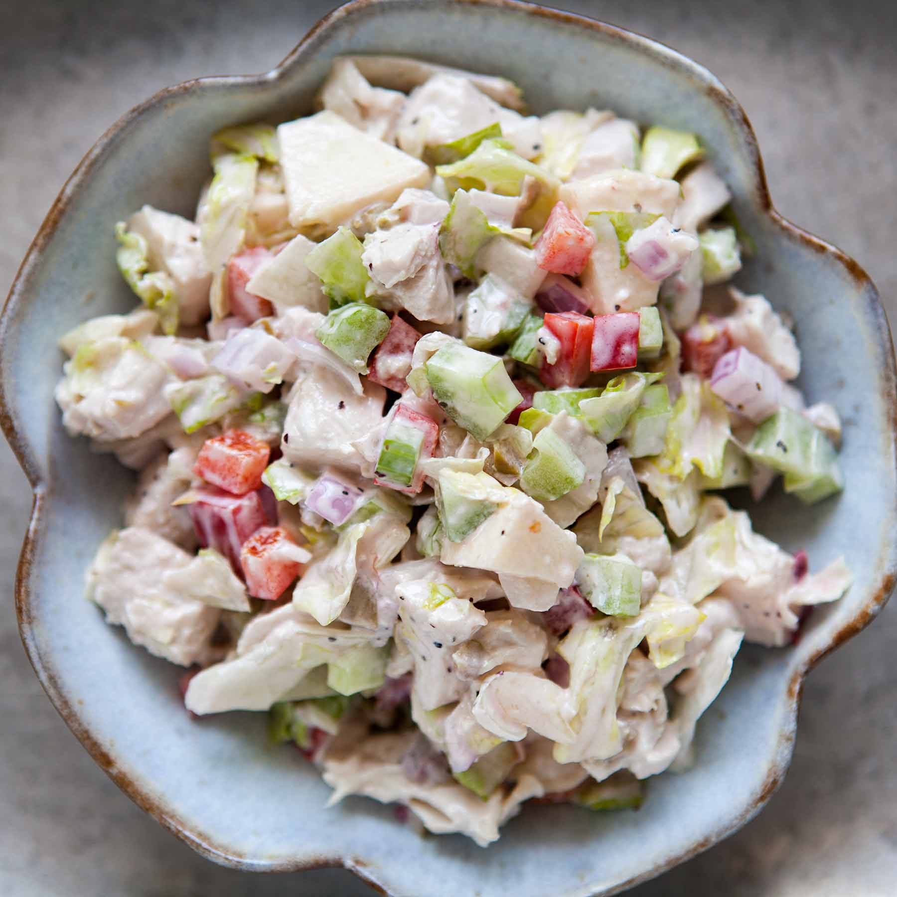

Time: 10 minutes
Cost: $12
Servings: 2
1. Prep all of the salad ingredients and toss them together in a large bowl.
2. Prepare the chicken salad dressing in a separate smaller bowl. Mix together the mayonnaise, preserves, and lemon juice.
3. Taste for the proper balance of sweetness and acidity. The salad dressing should not be too sweet nor too sour. Add more preserves or lemon juice until you have reached the balance you want. Add salt and pepper to taste.
4. Gently stir the dressing in with the chicken salad ingredients. Taste and add more salt and pepper if needed.